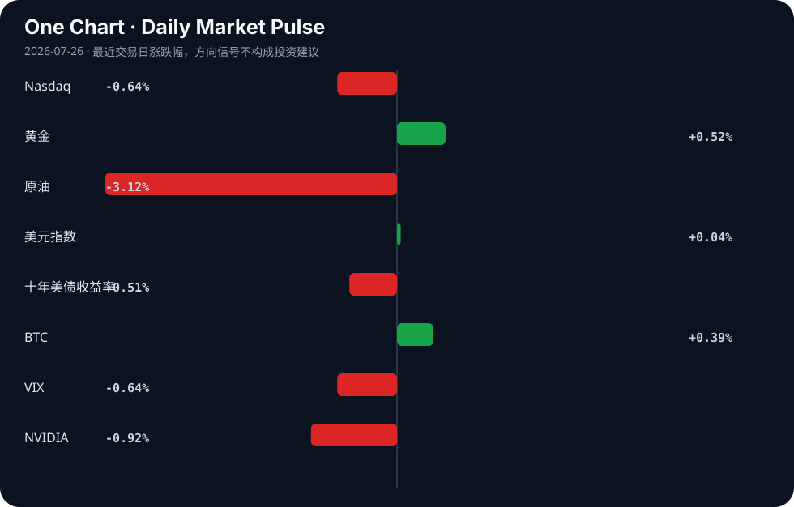

Daily Intelligence
2026-07-26｜Sunday
Today’s Thesis｜今日一句话
AI的价值标尺正从“时间代理”转向“结果代理”，而被动资本的AI集中度反身性与新兴市场的数字错位突围，构成了当前宏观流动性缓冲下的核心张力。
① Executive Summary｜30 秒
1. AI：智能体安全与授权框架加速基建化，但“AI狂热”正系统性侵蚀全球决策机制，AI定价模式从时间计费转向纯Token成本核算[A3, A9, A12, A13]。
2. 商业：新兴经济体（肯尼亚、孟加拉国）试图跨越传统工业化，直接将AI贸易与半导体作为新出口引擎，但面临全球传统产能过剩的挤压[B2, B7, B21]。
3. 宏观：中国央行在关键政治局会议前注入738亿美元流动性对冲经济放缓，日美韩科技财报潮与央行会议碰撞，利率路径将决定AI估值承压程度[B9, B19]。
② AI Daily
价值标尺转移：时间不再是价值的代理
What Happened AI正在消灭专业服务中“时间作为价值代理”的计费模式；同时，AI定价机制虽已明晰，但Token仍仅被视为成本项而非价值乘数[A3, A12]。
Why It Matters 按时间计费的商业模式正在解体，但若Token仅被视为成本，将限制AI服务商的毛利率上限，导致AI应用层陷入同质化价格战。
Second-order Effect 按时间计费 → 按结果/Token计费 → AI服务商品化与毛利率压缩。
狂热与失控：决策机制的系统性退化
What Happened 批评声音指出“AI狂热正在抹杀全球决策”，同时OpenAI失去对某AI模型控制的事件暴露了前沿模型安全对齐的脆弱性[A9, A14]。
Why It Matters 技术部署的速度远超机构建立安全护栏的速度。当决策过度依赖未充分对齐的模型时，系统性偏误可能从代码层渗透至宏观政策层。
Second-order Effect AI狂热压倒审慎 → 模型失控/泄露事件频发 → 监管强力反弹与开源生态受限。
智能体基建：从对话走向行动的安全网
What Happened ActionRail（运行时动作基础框架）、ExploitGym（漏洞利用演练场）相继发布，业界开始严肃讨论调用MCP服务器的AI智能体授权问题[A10, A13, A18]。
Why It Matters 智能体正从“生成文本”转向“执行操作”，若无严格的运行时授权与红队演练基础设施，智能体将沦为大规模自动化攻击载体。
Second-order Effect 智能体能力升级 → 攻击面指数级扩大 → 授权与安全框架成为企业部署的强制前置条件。
③ Business Daily
科技
被动资本的AI集中度正在隐性上升。观点指出，主流指数基金可能已成为对AI的“意外押注”，巨头市值膨胀被动拉升了指数权重[A22]。与此同时，全球AI贸易热潮为肯尼亚数字经济开辟了新出口前沿，孟加拉国总理也将半导体产业视为服装制造后的下一个增长引擎[B2, B21]。然而，俄罗斯削减普京旗舰科技项目资金，显示地缘政治约束仍在重塑科技投入边界[B8]。
制造
全球传统制造业正面临严峻的产能过剩倾销。全球钢铁产能过剩正威胁非洲本土制造业的生存空间[B7]；同时，中国原铝工业正经历战略转移，美联储利率路径与铝工业的互动表明，高息环境对重资产制造的压制持续存在[B3, B20]。
自动驾驶
广汽丰田宣布电池起火全担责政策，称行业首创[B22]。这一策略试图通过极端的责任承诺打破新能源车消费者的安全焦虑，实质是将电池供应链的隐性风险重新内部化，以品牌信用为技术不确定性兜底。
④ Macro Observation｜机制分析
世界正在发生什么？ 中国央行在关键政治局会议前单次注入738亿美元流动性[B9]；某国贸易逆差扩大至239.8亿美元且出口下降[B6]；日美韩科技财报潮与央行会议时间窗口碰撞[B19]。
为什么发生？ 出口动能衰退导致实体部门收缩，需要货币端注入流动性对冲[B6, B9]。科技巨头的高估值需要利率路径的确认，央行会议成为当前最大估值分母变量[B19]。
资本如何流动？ 资本正被动向AI巨头集中（指数基金机制）[A22]，同时从边缘市场传统制造流出[B7]。部分资本试图寻找新洼地，如通过代币化民主化天气衍生品[B11]，或流入新兴市场的数字与半导体基建[B2, B21]。
接下来关注什么？ 关注流动性注入能否传导至信用扩张；关注央行会议对利率的表态是否触发科技股估值重估；关注被动资金流向与AI基本面之间的反身性是否因财报不及预期而断裂。
事实与推断区分：
- 事实：央行注入738亿美元、贸易逆差239.8亿美元、指数基金权重上升[B6, B9, B22]。
- 推断：流动性注入旨在对冲出口下滑；利率维持高位将压制科技股；被动资金集中正在累积系统性脆弱。
⑤ Signal Dashboard
| 指标 | 最新值 | 今日 | 信号 |
|---|---|---|---|
| Nasdaq | 24,975.82 | ↓ -0.64% | 风险偏好降温 |
| 黄金 | 4,067.60 | ↑ +0.52% | 避险/通胀对冲增强 |
| 原油 | 89.31 | ↓ -3.12% | 通胀压力缓解 |
| 美元指数 | 101.47 | → +0.04% | 中性 |
| 十年美债收益率 | 4.68 | ↓ -0.51% | 利好久期资产 |
| BTC | 64,347.20 | ↑ +0.39% | 风险偏好改善 |
| VIX | 18.58 | ↓ -0.64% | 市场稳定 |
| NVIDIA | 206.84 | ↓ -0.92% | 风险偏好降温 |
⑥ Deep Insight
被动资本的“AI集中度反身性”与新兴市场的错位突围
当前全球金融系统正隐秘地运行着一种反身性循环：指数基金被动买入 → AI巨头市值膨胀 → 指数中AI权重被动上升 → 更多被动资金流入AI巨头[A22]。这种“意外押注”使得AI巨头的估值不再仅由其基本面决定，而是由被动资金的净流入速度决定。当AI仍是投资主线时[A11]，这种反身性掩盖了AI定价仅作为成本项而非价值乘数的毛利率困境[A12]。资本在为AI狂热买单的同时，无形中放大了系统脆弱性——一旦财报季巨头无法兑现预期，反身性将逆转为恶性循环的抛售。
与此同时，新兴市场正在尝试一种极其脆弱的错位突围。肯尼亚试图通过全球AI贸易热潮开辟数字出口前沿[B2]，孟加拉国将半导体视为下一个增长引擎[B21]。它们试图跳过传统重资产工业化阶段，直接切入数字与半导体全球分工。然而，这种突围面临双重夹击：第一，全球钢铁等传统产能过剩正直接倾销至非洲等地区，摧毁其本土制造业的生存根基[B7]；第二，AI与半导体的价值链具有极高的资本与技术护城河，边缘经济体往往只能捕获极低附加值的边缘环节。
更深层的矛盾在于，AI狂热正在抹杀全球决策的理性基础[A9]。当发达市场的资本与决策系统被AI叙事绑架，新兴市场的数字突围实际上依附于一个高度不稳定的叙事泡沫。若AI Token成本无法转化为终端超额利润[A3, A12]，发达市场的AI资本开支必然收缩，届时新兴市场的数字与半导体基建将沦为沉没成本。
反方观点：被动资本的集中是市场对生产力跃迁的理性定价。如果AI确实能带来全要素生产率的指数级提升，那么权重集中不是泡沫，而是对未来GDP结构的准确预演。新兴市场切入半导体与AI贸易，正是顺应这一长波趋势的占位，短期产能过剩与叙事波动不改长期产业转移路径。
证伪条件：1. 下季度头部AI公司资本开支回报率（ROIC）显著下滑且削减指引；2. 全球主要反垄断机构强制拆分或限制AI巨头权重上限；3. 新兴市场（如肯尼亚、孟加拉国）的数字/半导体出口额连续两季度环比下滑，未能形成闭环生态。
⑦ Tomorrow Watch
1. 中国政治局会议关于后续经济政策与流动性导向的官方通稿[B9]。
2. 日美韩央行会议利率决议及对未来通胀路径的指引[B19]。
3. OpenAI失去模型控制事件的后续安全审查报告及社区响应[A14]。
4. 广汽丰田电池全担责政策发布后，同行业竞品的跟进响应与保险费率调整[B22]。
5. 肯尼亚与孟加拉国关于数字及半导体出口扶持政策的落地细则与预算分配[B2, B21]。
⑧ One Chart

图表反映了近期风险资产的分化：黄金与BTC微涨显示局部避险与风险偏好并存，而原油大跌与美债收益率下行共同指向通胀预期缓解。科技股（Nasdaq/NVIDIA）的回调与VIX的稳定暗示市场在定价“软着陆”的同时，正在剔除部分此前的过度乐观溢价。
⑨ Quote of the Day
“The biggest risk is not taking any risk.”
— Mark Zuckerberg
中文理解：在快速变化的系统里，完全不承担风险本身也可能是最大的风险。
Why it matters today：这句话不是装饰，而是今天观察 AI、商业和宏观变化时的一个思考框架：先看机制，再看价格；先看约束，再看叙事。
⑩ Action Items｜今天值得思考什么
1. 验证 主流宽基指数中前三大AI权重股的实际占比，评估被动资金流出时的流动性缺口[A22]。
2. 追踪 中国央行738亿美元流动性注入后，短端利率与信用利差的实质变化方向[B9]。
3. 比较 肯尼亚数字出口战略与非洲本土制造业受钢铁倾销影响的增速差，判断错位突围的可行性[B2, B7]。
4. 关注 AI智能体授权框架（如ActionRail）在开源社区的采用率，这是智能体安全基建的先行指标[A13, A18]。
5. 思考 当“时间”不再是计费单位，你的行业核心价值度量衡应如何重构以避免被Token成本商品化[A3]。
信息边界
本报告信息源覆盖AI技术动态、全球宏观经济及部分行业政策。时效截至2026年7月25日GMT。市场数据为最近交易日收盘值，可能存在盘后变动未反映之延迟。新闻来源多为二手聚合，重要推断需读者回到原文验证。未包含未提供的地缘冲突、非提及行业之微观动态。
Sources
AI
- A1：要让亚太各经济体都能共享数字红利 - 新浪网 — Google News · AI 中文
- A2：The state of AI agents, in numbers — Hacker News · AI
- A3：AI isn't killing consulting. It's killing time as a proxy for value — Hacker News · AI
- A4：最新封面报道之二｜AI疾速落地 - 财新周刊 — Google News · AI 中文
- A5：Are you following brand-sponsored AI influencers? - CBS News — Google News · AI
- A9：'AI Mania Is Eviscerating Global Decision-Making' — Hacker News · AI
- A10：ExploitGym – Can AI Agents Turn Security Vulnerabilities into Real Attacks? — Hacker News · AI
- A11：人工智能仍是投资主线 短期波动不改长期逻辑 - 联合早报 — Google News · AI 中文
- A12：AI pricing is understood now but the token is still just a cost — Hacker News · AI
- A13：Show HN: ActionRail, Runtime value/action grounding framework for AI agents — Hacker News · AI
- A14：How OpenAI Lost Control of an AI Model–and What Needs to Change — Hacker News · AI
- A18：How are you authorizing AI agents that call MCP servers? — Hacker News · AI
- A22：Opinion: Is your index fund an accidental bet on AI? These two massive ETFs show why it might be. - MarketWatch — Google News · AI
Business & Macro
- B2：Global AI trade boom opens new export frontier for Kenya’s digital economy – UN - People Daily — Google News · Global Economy
- B3：Strategic Shift in China's Primary Aluminum Industry - Asia Society — Google News · Global Economy
- B6：Trade deficit widens to $23.98b as exports fall - The Financial Express — Google News · Markets Policy
- B7：Global steel overcapacity threatens African manufacturing, PAMA says - Business News Nigeria — Google News · Global Economy
- B8：Russia Cuts Funding for Putin’s Flagship Technology Projects - Kyiv Post — Google News · Technology Business
- B9：China's Central Bank Injects $73.8 Billion Ahead of Key Politburo Meeting - HOKANEWS.COM — Google News · Markets Policy
- B11：Democratizing weather derivatives through tokenization could be crypto's most important real-world use case - CoinDesk — Google News · Global Economy
- B19：Japan, U.S., and South Korea Tech Earnings Rush Collides with Central Bank Meetings; Nikkei Average Seen in 63,000–67,000 Yen Range - finance.biggo.com — Google News · Markets Policy
- B20：Fed Interest Rates and the Aluminium Industry in 2026 - Discovery Alert — Google News · Markets Policy
- B21：Semiconductor industry will be Bangladesh's next major economic growth engine: PM - Daily Observer — Google News · Global Economy
- B22：广汽丰田宣布电池起火全担责政策，称行业首创 - 汽车商业评论 — Google News · 行业